Hello we are Vicoshalom F. Opungu and Trerrenz Grajo and we like food :)
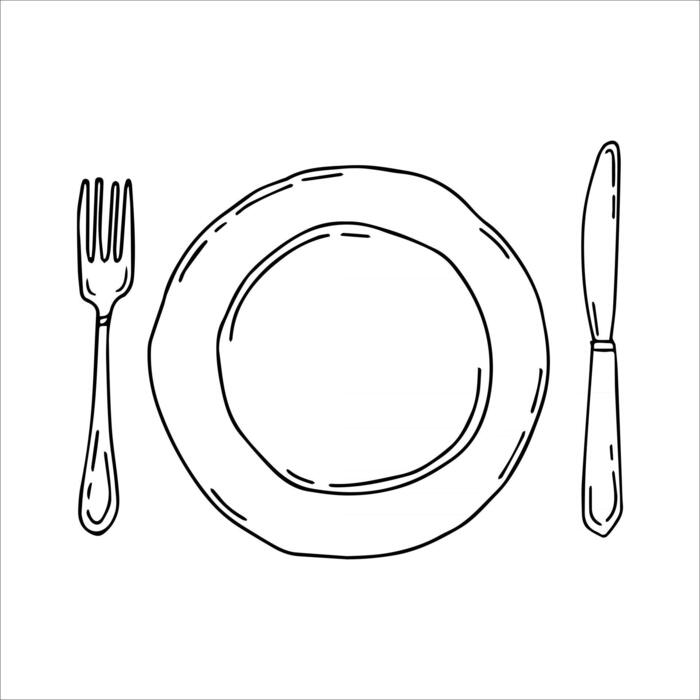
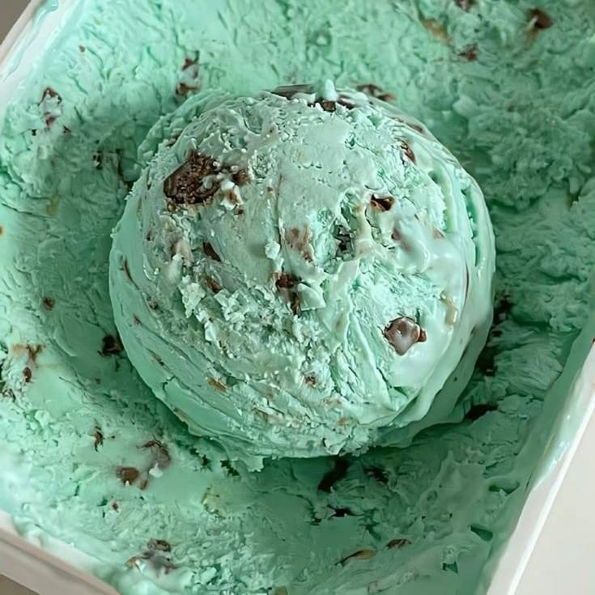
Icecream good during summer especialy mint chocolate chip, people say that mind and chocolate dont belong with eachother like how they say with pinaple on pizza but I disagre, Mint and chocolate go well with eachother.
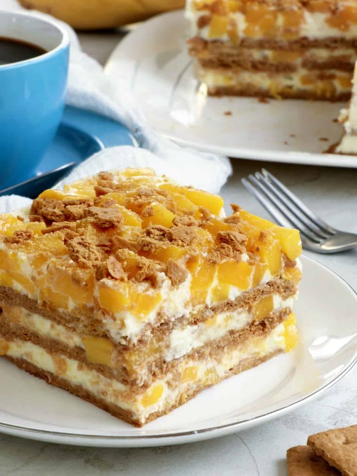
Graham cake sweet and delicious! The mango is blankets my favorite ingredient mmm... I wish i had some.
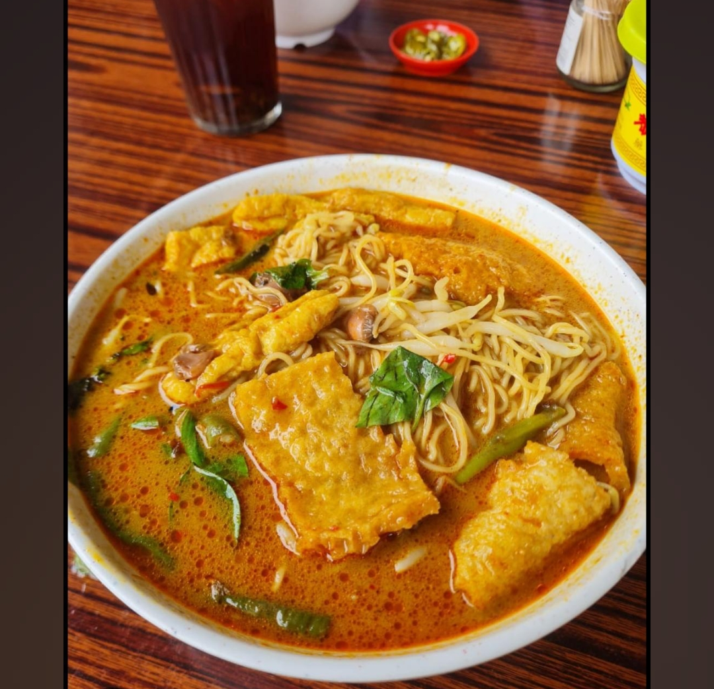
Curry noodles yummy boiled, spiced, spicy, tasty and fills your tummy, yummy!
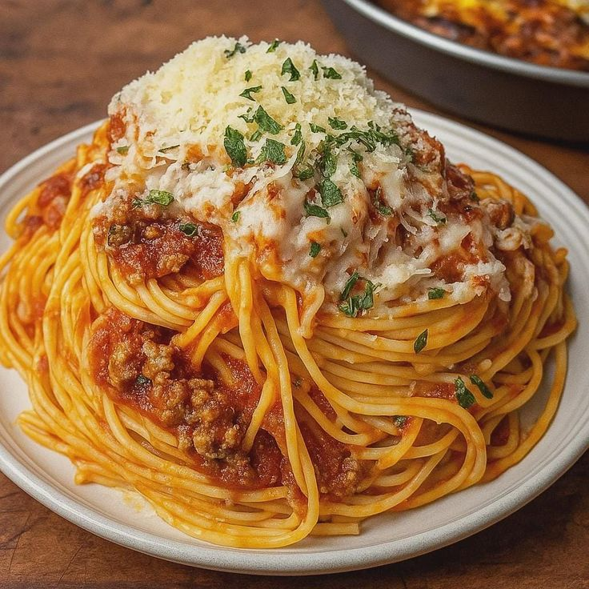
My favorite type of spaghetti is the type my mom cooks is so yummy. Spaghetti is just such an amazing food!
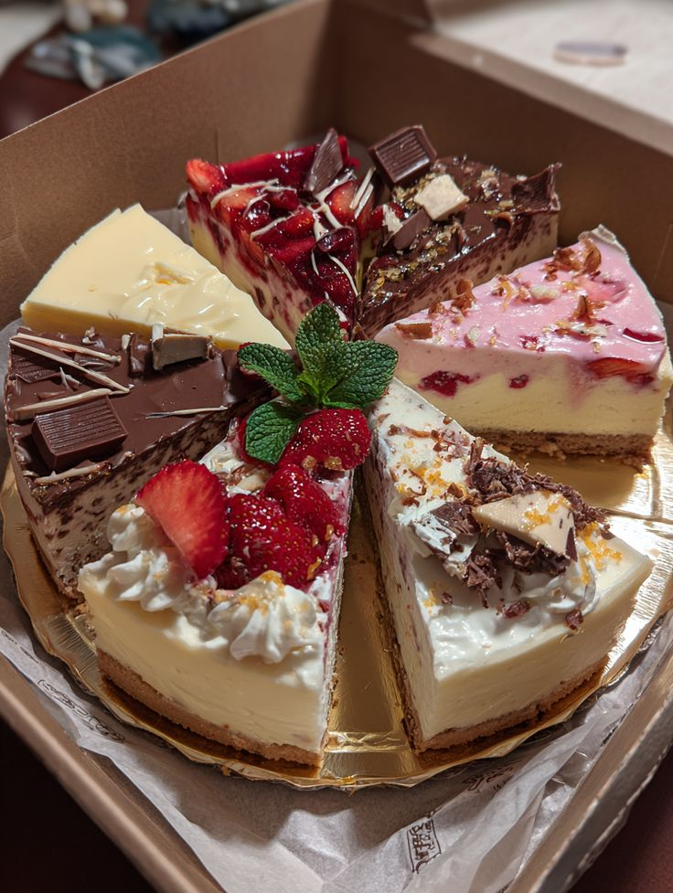
Cake.. Cake good i like alot of flavors i cant pick which one i like the most.
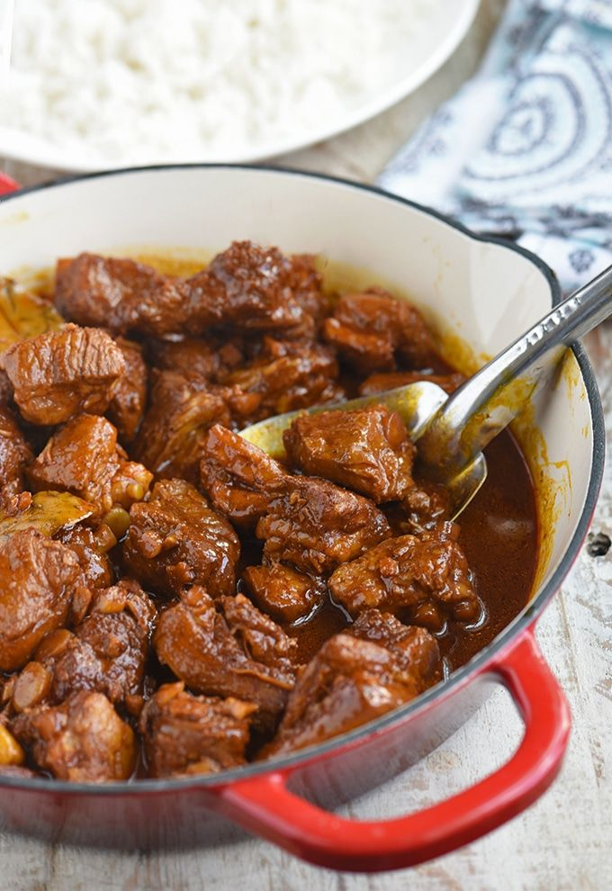
Adobo! yummy so so yummy!!!
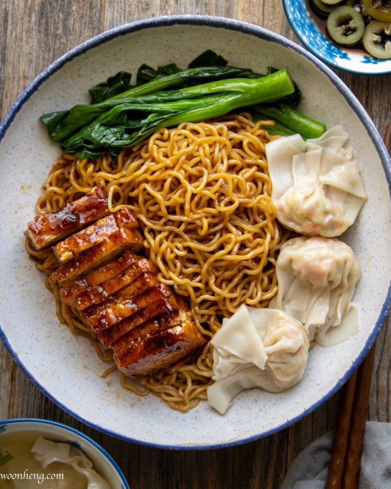
A beloved Cantonese dish of springy egg noodles, typically served dry in a rich dark soy and oyster sauce or in a savory broth
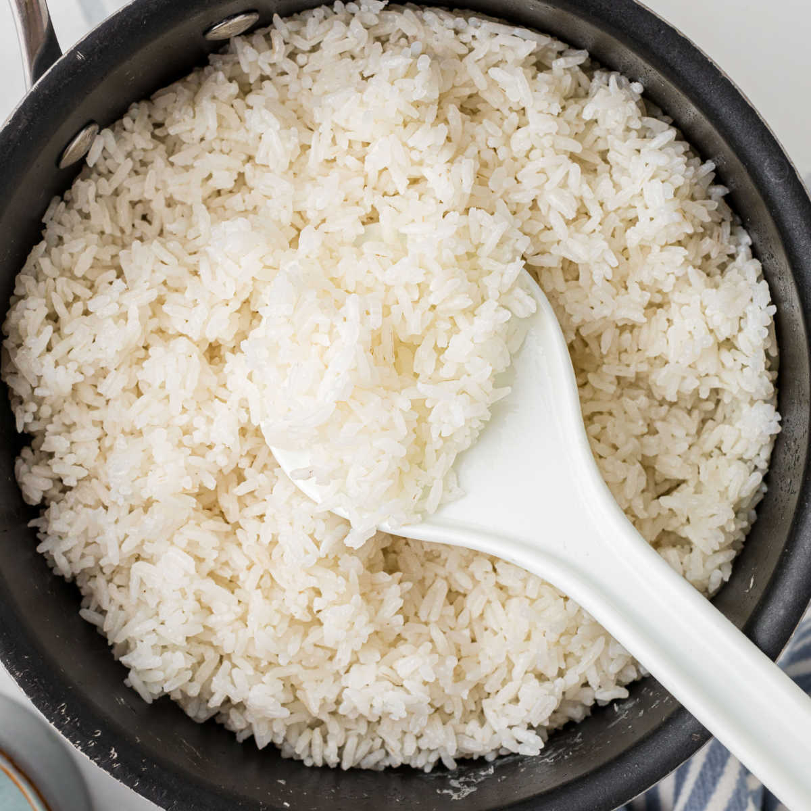
Rice goes well with alot of food it gives energy and makes you full
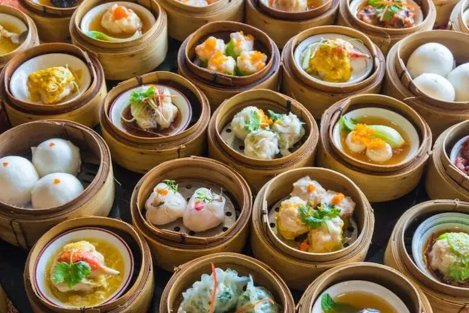
a broad culinary category that consists of pieces of dough—often wrapped around a filling that are boiled, steamed, or fried.
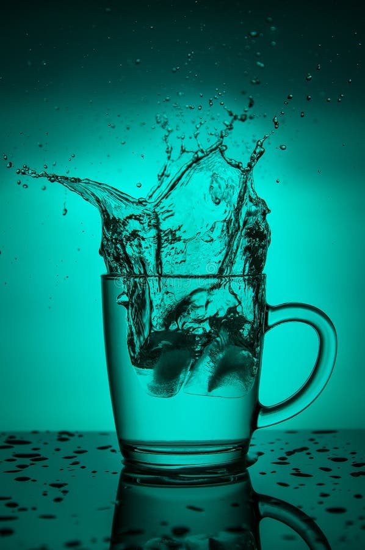
Water is life! It keeps you hydrated and healthy.